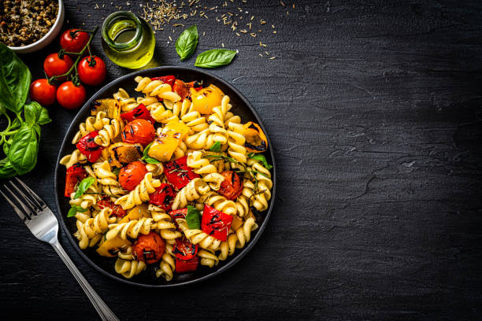
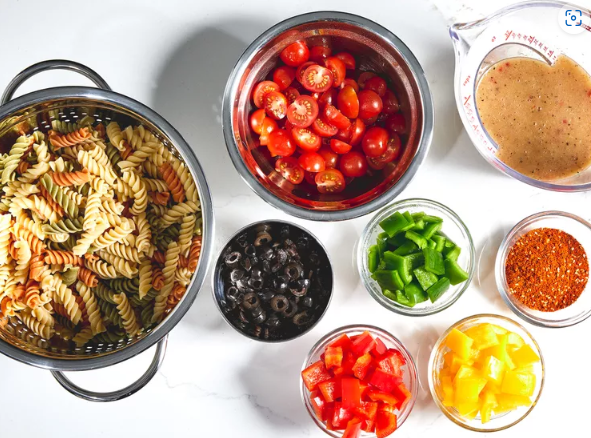
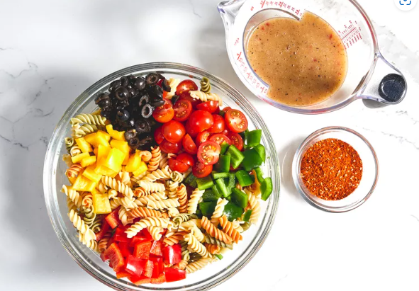
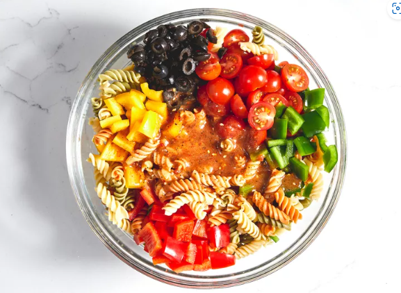
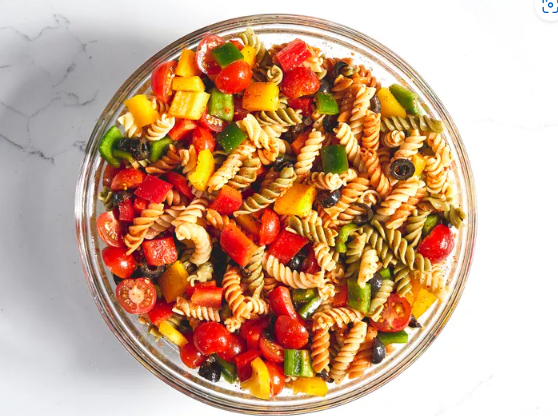
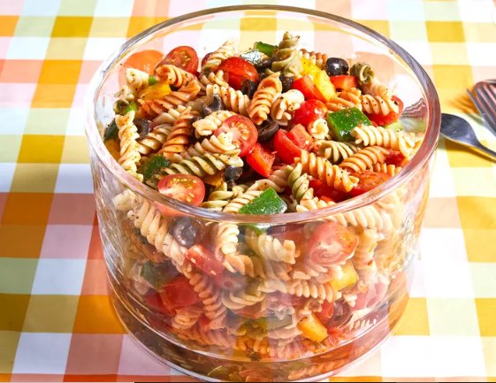

Pasta Salad

Description
Pasta salad is a chilled salad made with cooked and cooled pasta tossed in a
dressing with a variety of other ingredients. Various versions of this dish are made
in pretty much every region of the world where pasta is consumed, from glass noodle salads
in Vietnam to American macaroni salad, and this dish can be incredibly diverse.
Ingredients
- 1 pound tri-colored spiral pasta
- 1 (16 ounce) bottle Italian-style salad dressing
- 6 tablespoons salad seasoning mix
- 2 cups cherry tomatoes, diced
- 1 green bell pepper, chopped
- 1 red bell pepper, diced
- ½ yellow bell pepper, chopped
- 1 (2.25 ounce) can black olives, chopped
Steps
- Gather all ingredients

- Bring a large pot of lightly salted water to a boil. Cook pasta in the boiling water,
stirring occasionally, until tender yet firm to the bite, about 10 to 12 minutes;
rinse under cold water and drain.
- Whisk Italian dressing and salad spice mix together until smooth. Combine pasta,
tomatoes, bell peppers, and olives in a salad bowl.

- Pour dressing over salad and toss to coat.

- Refrigerate salad, 8 hours to overnight.

- Enjoy!

Return Home